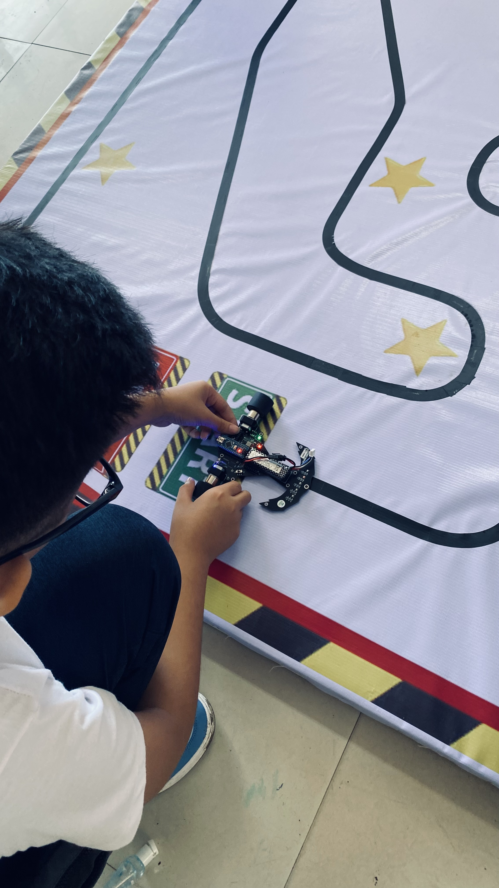
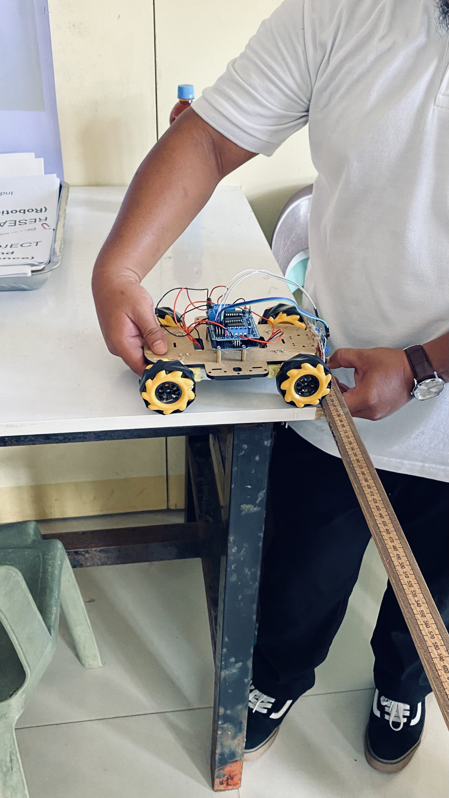

Week 4: Expanding My Learning Beyond the Office
This week marks my fourth week as an OJT at SDO Sorsogon City, and each day continues to be a meaningful learning experience under the guidance of Sir Francis. I am gaining not only technical skills but also a deeper understanding of how collaboration, coordination, and responsibility play vital roles in a professional environment.
One of the highlights of this week was joining Sir Francis at the Division Science, Technology, Fair, and Robotics Olympics for SY 2025–2026 held at Sorsogon National High School (SNHS). I was fortunate to be part of the event’s organizing team, serving as one of the coordinators. It was an exciting and eye-opening experience to witness the creativity and innovation of students who built and presented their own robots. Some of the featured projects included line follower robots made by elementary students from SECS and SPES, and sumo-bots developed by high school teams.
Being part of this event gave me a broader perspective on how technology and education work hand in hand to inspire young minds. I was amazed by how these students applied science and programming concepts to real-world projects. It reminded me of the importance of curiosity and continuous learning—values that I aim to carry with me throughout my OJT and future career.
What made this experience even more fulfilling was the realization that learning does not only happen inside the office. Sir Francis consistently encourages me to participate in meaningful activities that help me grow both professionally and personally. Through these experiences, I have learned to step out of my comfort zone, communicate effectively with others, and appreciate the value of teamwork and leadership.
Overall, this week has strengthened my confidence and deepened my passion for technology and innovation. I am grateful for the opportunities given to me and excited to see what the coming weeks will bring.

